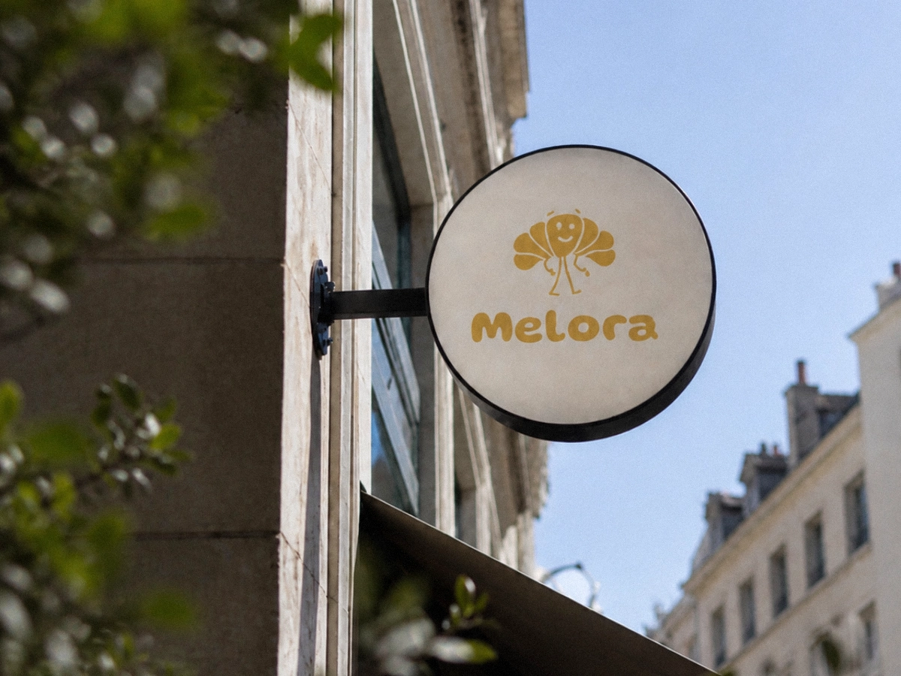

Melora Bakery
minimal identity system, character-led recognition, limited visual tools, applied across touchpoints.
//
Brand Identity
Mascot System
Packaging Design
Art Direction

LIMITED SYSTEM
CLEAR RECOGNITION
The project explores how a bakery identity can stay recognizable with a narrow set of visual tools.
Melora was developed as a concept identity for a small bakery-café. The system uses one dominant color, one primary type style and simple illustrated assets.
The aim was to create a recognizable identity without building a large or overly decorative visual system.

CHARACTER-LED
IDENTITY SYSTEM
Illustration carried the brand tone while the system stayed visually restrained.
The identity was built around a limited set of recurring assets: the baker symbol, the croissant mark, rounded typography and a single dominant color.
These elements created recognition across small-format applications without expanding into an overly decorative system.




STOREFRONT
APPLICATION
The identity was applied to the storefront through scale, color and a single illustrated mark.
The same visual language appears across the sign, window graphic and lower facade pattern.
TAKEAWAY
APPLICATIONS
The visual language was extended across packaging, cups and everyday carry items.
Packaging used recurring marks, product-based illustrations and a consistent color direction to keep the identity recognizable across different formats.
The applications were designed to remain simple, repeatable and visually connected across takeaway moments.


PHYSICAL
TOUCHPOINTS
Staff pieces used the main character mark as a simple recognition point, while printed cards carried the same color, typography and illustrated language.
The applications kept the identity visible across direct customer interactions without adding new graphic layers.

System Outcomes
Character-led identity
- Primary mark, croissant mark and secondary visual assets
Single-color direction
- One dominant color used across packaging, signage and physical applications
Physical touchpoints
- Storefront, takeaway packaging, cups, staff apparel, tote bag and printed cards
Consistent application
- The identity stayed recognizable across small objects, street-level signage and customer-facing materials